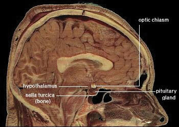

Recall that the macronutrients you consume are either converted to energy, stored, or used to synthesize macromolecules. A nutrient’s metabolic path is dependent upon energy balanceWhen energy intake is equal to energy expended.. When you are in a positive energy balance the excess nutrient energy will be stored or used to grow (e.g., during childhood, pregnancy, and wound healing). When you are in negative energy balance you aren’t taking in enough energy to meet your needs, so your body will need to use its stores to provide energy. Energy balance is achieved when intake of energy is equal to energy expended. Weight can be thought of as a whole body estimate of energy balance; body weight is maintained when the body is in energy balance, lost when it is in negative energy balance, and gained when it is in positive energy balance. In general, weight is a good predictor of energy balance, but many other factors play a role in energy intake and energy expenditure. Some of these factors are under your control and others are not. Let us begin with the basics on how to estimate energy intake, energy requirement, and energy output. Then we will consider the other factors that play a role in maintaining energy balance and hence, body weight.
To maintain body weight you have to balance the calories obtained from food and beverages with the calories expended every day. Here, we will discuss how to calculate your energy needs in kilocalories per day so that you can determine whether your caloric intake falls short, meets, or exceeds your energy needs. The Institute of Medicine has devised a formula for calculating your Estimated Energy Requirement (EER)Energy intake values that have been established to preserve energy balance in healthy adults of a specific age, gender, weight, and height, and category of physical activity concurrent with good health.. It takes into account your age, sex, weight, height, and physical activity level (PA). The EER is a standardized mathematical prediction of a person’s daily energy needs in kilocalories per day required to maintain weight. It is calculated via the following formulas:
Adult male: EER = 662 − [9.53 x age (y)] + PA X [15.91 x wt (kg) + 5.39.6 x ht (m)] Adult female: EER = 354 − [6.91 x age (y)] + PA x [9.36 x wt (kg) + 726 x ht (m)] Note: to convert pounds to kilograms, divide weight in pounds by 2.2. To convert feet to meters, divide height in feet by 3.3.In Chapter 3 "Nutrition and the Human Body" you learned how to calculate the number of calories in food. To determine your caloric intake per day requires that you conduct a dietary assessment and record the number of calories you eat. To help you accomplish this task see Note 11.17 "Interactive 11.3".
To begin your dietary assessment, go to MyPlate, which is available on the US Department of Agriculture (USDA) website:
Table 11.2 Physical Activity (PA) Categories and Values
| Activity Level | Men PA Value | Women PA Value | Description |
|---|---|---|---|
| Sedentary | 1.00 | 1.00 | No physical activity beyond that required for independent living |
| Low | 1.11 | 1.12 | Equivalent to walking 1.5 to 3 miles per day |
| Moderate | 1.25 | 1.27 | Equivalent to walking 3 to 10 miles per day |
| High | 1.48 | 1.45 | Equivalent to walking 10 or more miles per day |
| These values only apply to normal weight adults and not to children or pregnant or lactating women. | |||
Source: Health Canada. “Dietary Reference Intake Tables.” Last modified November 29, 2010. http://www.hc-sc.gc.ca/fn-an/nutrition/reference/table/index-eng.php#eeer.
The numbers within the equations for the EER were derived from measurements taken from a group of people of the same sex and age with similar body size and physical activity level. These standardized formulas are then applied to individuals whose measurements have not been taken, but who have similar characteristics in order to estimate their energy requirements. Thus, a person’s EER is, as the name suggests, an estimate for an average person of similar characteristics. EER values are different for children, pregnant or lactating women, and for overweight and obese people. Also, remember the EER is calculated based on weight maintenance, not for weight loss or weight gain.
The 2010 Dietary Guidelines provides a table (Table 11.3 "Estimated Daily Calorie Needs") that gives the estimated daily calorie needs for different age groups of males and females with various activity levels. The 2010 Dietary Guidelines also states that while knowing the number of calories you need each day is useful, it is also pertinent to obtain your calories from nutrient-dense foods and consume the various macronutrients in their Acceptable Macronutrient Distribution Ranges (AMDRs) (Table 11.4 "Acceptable Macronutrient Distribution Ranges").
Table 11.3 Estimated Daily Calorie Needs
| Sex | Age (years) | Sedentary | Moderately Active | Active |
|---|---|---|---|---|
| Child (female and male) | 2–3 | 1,000–1,200 | 1,000–1,400 | 1,000–1,400 |
| Female | 4–8 | 1,200–1,400 | 1,400–1,600 | 1,400–1,800 |
| 9–13 | 1,400–1,600 | 1,600–2,000 | 1,800–2,200 | |
| 14–18 | 1,800 | 2,000 | 2,400 | |
| 19–30 | 1,800–2,000 | 2,000–2,200 | 2,400 | |
| 31–50 | 1,800 | 2,000 | 2,200 | |
| 51+ | 1,600 | 1,800 | 2,000–2,200 | |
| Male | 4–8 | 1,200–1,400 | 1400–1,600 | 1,600–2,000 |
| 9–13 | 1,600–2,000 | 1,800–2,200 | 2,000–2,600 | |
| 14–18 | 2,000–2,400 | 2,400–2,800 | 2,800–3,200 | |
| 19–30 | 2,400–2,600 | 2,600–2,800 | 3,000 | |
| 31–50 | 2,200–2,400 | 2,400–2,600 | 2,800–3,000 | |
| 51+ | 2,000–2,200 | 2,200–2,400 | 2,400–2,800 |
Source: US Department of Agriculture. 2010 Dietary Guidelines for Americans. 2010. http://health.gov/dietaryguidelines/dga2010/DietaryGuidelines2010.pdf.
Table 11.4 Acceptable Macronutrient Distribution Ranges
| Age | Carbohydrates (% of Calories) | Protein (% of Calories) | Fat (% of Calories) |
|---|---|---|---|
| Young Children (1–3) | 45–65 | 5–20 | 30–40 |
| Older children/adolescents (4–18) | 45–65 | 10–30 | 25–35 |
| Adults (19 and older) | 45–65 | 10–35 | 20–35 |
Source: Institute of Medicine. “Dietary Reference Intakes: Macronutrients.” Dietary Reference Intakes for Energy, Carbohydrate. Fiber, Fat, Fatty Acids, Cholesterol, Protein, and Amino Acids. September 5, 2002. http://www.iom.edu/~/media/Files/Activity%20Files/Nutrition/DRIs/DRI_Macronutrients.pdf
The amount of energy you expend every day includes not only the calories you burn during physical activity, but also the calories you burn while at rest (basal metabolism), and the calories you burn when you digest food. The sum of caloric expenditure is referred to as total energy expenditure (TEE)The sum of energy used for basal metabolism; energy required for food digestion and absorption and energy expended during physical activity.. Basal metabolismThe metabolic pathways necessary to support and maintain basic body functions (e.g. breathing, heartbeat, liver and kidney function) while at rest. refers to those metabolic pathways necessary to support and maintain the body’s basic functions (e.g. breathing, heartbeat, liver and kidney function) while at rest. The basal metabolic rate (BMR) is the amount of energy required by the body to conduct its basic functions over a certain time period. The great majority of energy expended (between 50 and 70 percent) daily is from conducting life’s basic processes. Of all the organs, the liver requires the most energy (see Table 11.5 "Energy Breakdown of Organs"). Unfortunately, you cannot tell your liver to ramp up its activity level to expend more energy so you can lose weight. BMR is dependent on body size, body composition, sex, age, nutritional status, and genetics. People with a larger frame size have a higher BMR simply because they have more mass. Muscle tissue burns more calories than fat tissue even while at rest and thus the more muscle mass a person has, the higher their BMR. Since females typically have less muscle mass and a smaller frame size than men, their BMRs are generally lower than men’s. As we get older muscle mass declines and thus so does BMR. Nutritional status also affects basal metabolism. Caloric restriction, as occurs while dieting, for example, causes a decline in BMR. This is because the body attempts to maintain homeostasis and will adapt by slowing down its basic functions to offset the decrease in energy intake. Body temperature and thyroid hormone levels are additional determinants of BMR.
Table 11.5 Energy Breakdown of Organs
| Organ | Percent of Energy Expended |
|---|---|
| Liver | 27 |
| Brain | 19 |
| Heart | 7 |
| Kidneys | 10 |
| Skeletal muscle (at rest) | 18 |
| Other organs | 19 |
Total energy expenditure is the sum of energy expended at rest, during digestion, and during physical activity.
The energy required for all the enzymatic reactions that take place during food digestion and absorption of nutrients is called the “thermic effect of food” and accounts for about 10 percent of total energy expended per day. The other energy required during the day is for physical activity. Depending on lifestyle, the energy required for this ranges between 15 and 30 percent of total energy expended. The main control a person has over TEE is to increase physical activity.
Calculating TEE can be tedious, but has been made easier as there are now calculators available on the Web (see Note 11.20 "Interactive 11.4"). TEE is dependent on age, sex, height, weight, and physical activity level. The equations are based on standardized formulas produced from actual measurements on groups of people with similar characteristics. To get accurate results from web-based TEE calculators, it is necessary to record your daily activities and the time spent performing them. A spreadsheet for doing so is available online at http://www.health-calc.com/Calculate_daily_energy_expenditure.pdf.
Health-calc.com offers an interactive TEE calculator.
In the last few decades scientific studies have revealed that how much we eat and what we eat is controlled not only by our own desires, but also is regulated physiologically and influenced by genetics. The hypothalamus in the brain is the main control point of appetite. It receives hormonal and neural signals, which determine if you feel hungry or full. HungerAn unpleasant sensation of feeling empty that is communicated from the periphery to the brain via both mechanical and chemical signals. is an unpleasant sensation of feeling empty that is communicated to the brain by both mechanical and chemical signals from the periphery. Conversely, satietyThe sensation of feeling full; determined by mechanical and chemical signals relayed from the periphery. is the sensation of feeling full and it also is determined by mechanical and chemical signals relayed from the periphery. The hypothalamus contains distinct centers of neural circuits that regulate hunger and satiety (Figure 11.1).
Figure 11.1
This is a scan of a brain. The hypothalamus contains distinct centers of neural circuits that regulate hunger and satiety.
Source: Diabesity, Sixth Framework Programme. “Novel Molecular Targets for Obesity and Type 2 Diabetes.” 2002-2006. http://www.diabesity.eu/.honours.htm.
Hunger pangs are real and so is a “growling” stomach. When the stomach is empty it contracts, producing the characteristic pang and “growl.” The stomach’s mechanical movements relay neural signals to the hypothalamus, which relays other neural signals to parts of the brain. This results in the conscious feeling of the need to eat. Alternatively, after you eat a meal the stomach stretches and sends a neural signal to the brain stimulating the sensation of satiety and relaying the message to stop eating. The stomach also sends out certain hormones when it is full and others when it is empty. These hormones communicate to the hypothalamus and other areas of the brain either to stop eating or to find some food.
Fat tissue also plays a role in regulating food intake. Fat tissue produces the hormone leptin, which communicates to the satiety center in the hypothalamus that the body is in positive energy balance. The discovery of leptin’s functions sparked a craze in the research world and in the diet pill industry as it was hypothesized that if you give leptin to a person who is overweight, they will decrease their food intake. Alas, this is not the case. In several clinical trials it was found that people who are overweight or obese are actually resistant to the hormone, meaning their brain does not respond as well to it.Dardeno, T. A. et al. “Leptin in Human Physiology and Therapeutics.” Front Neuroendocrinol 31, no. 3 (2010): 377–93. http://www.ncbi.nlm.nih.gov/pmc/articles/PMC2916735/?tool=pubmed. Therefore, when you administer leptin to an overweight or obese person there is no sustained effect on food intake.
Nutrients themselves also play a role in influencing food intake. The hypothalamus senses nutrient levels in the blood. When they are low the hunger center is stimulated, and when they are high the satiety center is stimulated. Furthermore, cravings for salty and sweet foods have an underlying physiological basis. Both undernutrition and overnutrition affect hormone levels and the neural circuitry controlling appetite, which makes losing or gaining weight a substantial physiological hurdle.
Genetics certainly play a role in body fatness and weight and also affects food intake. Children who have been adopted typically are similar in weight and body fatness to their biological parents. Moreover, identical twins are twice as likely to be of similar weights as compared to fraternal twins. The scientific search for obesity genes is ongoing and a few have been identified, such as the gene that encodes for leptin. However, overweight and obesity that manifests in millions of people is not likely to be attributed to one or even a few genes, but to rather the interactions of hundreds of genes with the environment. In fact, when an individual has a mutated version of the gene coding for leptin, they are obese, but only a few dozen people around the world have been identified as having a completely defective leptin gene.
When your mouth waters in response to the smell of a roasting Thanksgiving turkey and steaming hot pies, you are experiencing a psychological influence on food intake. A person’s perception of good-smelling and good-tasting food influences what they eat and how much they eat. Mood and emotions are associated with food intake. Depression, low self-esteem, compulsive disorders, and emotional trauma are sometimes linked with increased food intake and obesity.
Certain behaviors can be predictive of how much a person eats. Some of these are how much food a person heaps onto their plate, how often they snack on calorie-dense, salty foods, how often they watch television or sit at a computer, and how often they eat out. A study published in a 2008 issue of Obesity looked at characteristics of Chinese buffet patrons. The study found that those who chose to immediately eat before browsing the buffet, used larger plates, used a fork rather than chopsticks, and chewed less per bite of food, had higher BMIs than patrons who did not exhibit these behaviors.Levin, B. E. “Developmental Gene X Environment Interactions Affecting Systems Regulating Energy Homeostasis and Obesity.” Front Neuroendocrinol 3 (2010): 270–83. http://www.ncbi.nlm.nih.gov/pmc/articles/PMC2903638/?tool=pubmed. Of course many behaviors are reflective of what we have easy access to—a concept we will discuss next.
It is without a doubt that the American society affects what and how much we eat. Portion sizes have increased dramatically in the past few decades. For example, a bagel is now more than twice the size it was in the 1960s. Today, American teenagers have access to a massive amount of calorie-dense foods and beverages, which is a large contributor to the recent rapid increase in overweight and obesity in adolescents in this country. Even different cultures within the United States have different eating habits. For instance, southern Americans, in general, consume more foods high in fat, which is a contributing factor to their higher incidences of overweight and obesity than Americans who live in the northern states. (Alaska is an exception because it also has a high incidence of overweight and obesity, which is also partly attributed to diet.)
The fast food industry in America not only supplies Americans with a large proportion of their diet, but because of its massive presence in society dominates the workings of the entire food system (Note 11.23 "Video 11.1"). To generalize, most fast food items have little nutritional merit as they are highly processed and rich in saturated fat, salt, and added sugars. Despite fast foods being a poor source of nourishment, Americans spend over one hundred billion dollars per year on fast food, up from six billion dollars in the early 1970s. The fast food business is likely to continue to grow in North America (and the rest of the world) and greatly affect the diets of whole populations. Because it is unrealistic to say that Americans should abruptly quit eating fast food to save their health (because they will not) society needs to come up with ideas that push nutrient-dense whole foods into the fast food industry. You may have observed that this largely consumer-driven push is having some effect on the foods the fast food industry serves (just watch a recent Subway commercial, or check the options now available in a McDonald’s Happy Meal). Pushing the fast food industry to serve healthier foods is a realistic and positive way to improve the American diet.
History, Structure, and Ethics of the Fast Food Industry
(click to see video)A brief clip about the fast food industry and its effect on the United States.
Support the consumer movement of pushing the fast food industry and your favorite local restaurants into serving more nutrient-dense foods. You can begin this task by starting simple, such as requesting extra tomatoes and lettuce on your burger and more nutrient-dense choices in the salad bar. Also, choose their low-calorie menu options and help support the emerging market of healthier choices in the fast food industry. In today’s fast-paced society, it is difficult for most people to avoid fast food all the time. When you do need a quick bite on the run, choose the fast food restaurants that serve healthier foods. Also, start asking for caloric contents of foods so that the restaurant becomes more aware that their patrons are being calorie conscious.
Why is it so difficult for some people to lose weight and for others to gain weight? One theory is that every person has a “set point” of energy balance. This set point can also be called a fat-stat or lipostat, meaning the brain senses body fatness and triggers changes in energy intake or expenditure to maintain body fatness within a target range. Some believe that this theory provides an explanation as to why after dieting, most people return to their original weight not long after stopping the diet. Another theory is referred to as the “settling” point system, which takes into account (more so than the “set-point” theory) the contribution of the obesogenic environment to weight gain. In this model, the reservoir of body fatness responds to energy intake or energy expenditure, such that if a person is exposed to a greater amount of food, body fatness increases, or if a person watches more television body fatness increases. A major problem with these theories is that they overgeneralize and do not take into account that not all individuals respond in the same way to changes in food intake or energy expenditure. This brings up the importance of the interactions of genes and the environment.
Not all individuals who take a weight-loss drug lose weight and not all people who smoke are thin. An explanation for these discrepancies is that each individual’s genes respond differently to a specific environment. Alternatively, environmental factors can influence a person’s gene profile, which is exemplified by the effects of the prenatal environment on body weight and fatness and disease incidence later in life. One of the first scientific investigations of prenatal control over energy balance was conducted in Germany. In this observational study, scientists found that offspring born to mothers who experienced famine were more likely to be obese in adulthood than offspring born to mothers who were pregnant just after World War II who lived in the same geographical locations.Matthews, C. E. “Amount of Time Spent in Sedentary Behaviors in the United States, 2003–2004.” Am J Epidemiol 167, no. 7 (2008): 875–81. doi: 10.1093/aje/kwm390. Other studies have shown that the offspring of women who were overweight during pregnancy have a greater propensity for being overweight and for developing Type 2 diabetes. Thus, undernutrition and overnutrition during pregnancy influence body weight and disease risk for offspring later in life. They do so by adapting energy metabolism to the early nutrient and hormonal environment in the womb.
Rethinking Thin: The Myths and Realities of Dieting
Listen to this broadcast for scientific information about why it is so difficult for some people to lose weight.
http://www.npr.org/player/v2/mediaPlayer.html?action=1&t=1&islist=false&id=10354959&m=10355662
Sedentary behaviorActivity during which energy expenditure is no more than one and one-half times the amount of energy expended while at rest (examples include sitting, reclining, or lying down while awake). is defined as the participation in the pursuits in which energy expenditure is no more than one-and-one-half times the amount of energy expended while at rest and include sitting, reclining, or lying down while awake. Of course, the sedentary lifestyle of many North Americans contributes to their average energy expenditure in daily life. Simply put, the more you sit, the less energy you expend. A study published in a 2008 issue of the American Journal of Epidemiology reports that 55 percent of Americans spend 7.7 hours in sedentary behavior daily.Matthews, C. E. “Amount of Time Spent in Sedentary Behaviors in the United States, 2003–2004.” Am J Epidemiol 167, no. 7 (2008): 875–81. doi: 10.1093/aje/kwm390. Fortunately, including only a small amount of low-level physical activity benefits weight control. A study published in the June 2001 issue of the International Journal of Behavioral Nutrition and Physical Activity reports that even breaking up sitting-time with frequent, but brief increased energy expenditure activities, such as walking for five minutes every hour, helps maintain weight and even aids in weight loss.Wu, Y. “Overweight and Obesity in China.” Br Med J 333, no. 7564 (2006): 362. doi: 10.1136/bmj.333.7564.362. Americans partake in an excessive amount of screen time, which is a sedentary behavior that not only reduces energy expenditure, but also contributes to weight gain because of the exposure to aggressive advertising campaigns for unhealthy foods.
In the United States, many societal factors influence the number of calories burned in a day. Escalators, moving walkways, and elevators (not to mention cars!) are common modes of transportation that reduce average daily energy expenditure. Office work, high-stress jobs, and occupations requiring extended working hours are all societal pressures that reduce the time allotted for exercise of large populations of Americans. Even the remote controls that many have for various electronic devices in their homes contribute to the US society being less active. More “obesogenic” factors were discussed in the opening of this chapter.
Socioeconomic status has been found to be inversely proportional to weight gain. One reason for this relationship is that inhabitants of low-income neighborhoods have reduced access to safe streets and parks for walking. Another is that fitness clubs are expensive and few are found in lower-income neighborhoods. The recent and long-lasting economic crisis in this country is predicted to have profound effects on the average body weight of Americans. The number of homeless in this country is rising with many children and adults living in hotels and cars. As you can imagine neither of these “home spaces” has a kitchen, making it impossible to cook nutritious meals and resulting in increased economically-forced access to cheap, unhealthy foods, such as that at a nearby gas station.
Many people have a hard time understanding the difficulties of being too skinny. Discuss with your peers how to empathize with the weight problems of underweight people. Read the article to understand that being skinny does not mean a person necessarily has a lower risk of chronic disease.
http://www.msnbc.msn.com/id/18594089/ns/health-fitness/t/thin-people-can-be-fat-inside/